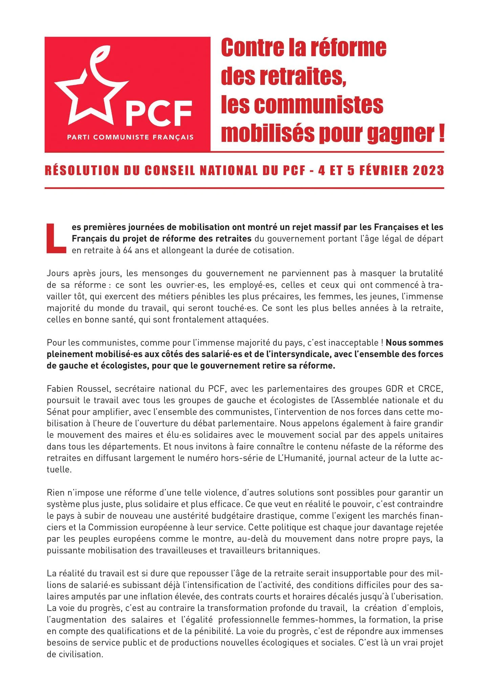
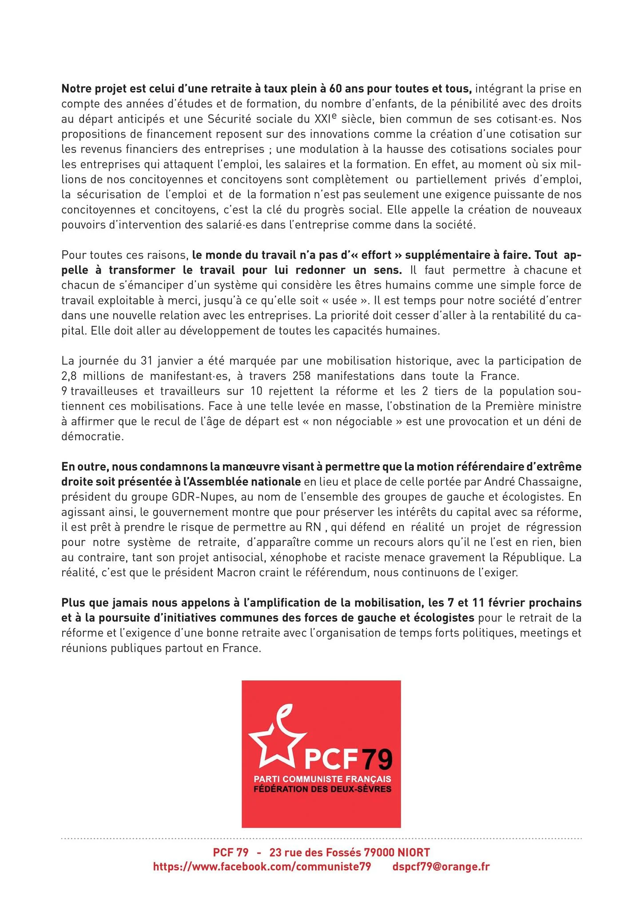

Publication d’archives
Contre la réforme des retraites, les communistes mobilisés pour gagner !
Date indiquée par Facebook · 8 février 2023
Texte conservé avec la publication
Contexte du dossier
Le 2 février, une légende critique le choix d’attribuer au RN la motion référendaire sur les retraites : elle le qualifie de décision politique, sans développer davantage. La priorité des jours suivants reste l’élargissement des grèves. Le 7, les photos de Niort accompagnent un refus précis : aucun recul de l’âge légal, aucun allongement des cotisations. La légende d’une vidéo, mise à jour le 8, situe aussi une manifestation à Bressuire le 7. La fédération relaie ensuite le titre de la résolution du conseil national du PCF des 4 et 5 février, puis appelle à amplifier le 11. Le texte de la résolution, présenté en images, n’est pas remplacé ici par un contenu supposé.


Sources
Archive rouge · export Facebook · AR-0002-FB-01761
À lire aussi · Appel solennel à l'attention du Président de la République :